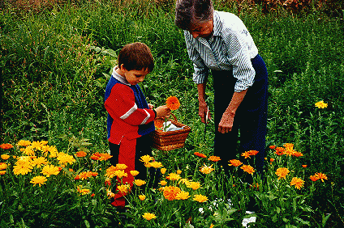
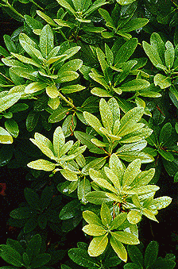

Prunings
warm the patio in a wok
Prunings
warm the patio in a wok
Introduction History Spring Tour Other Seasons Companion Plants Fruit/Veg/Herbs Work Family Links ARS Visiting the Garden Design Elements SPECIMENS TIPS GARDEN FURNITURE Winter Spring Tour Summer (More Summer) Fall
Summer (More Summer)

Summer rain Prunings
warm the patio in a wok
Introduction History Spring Tour Other Seasons Companion Plants Fruit/Veg/Herbs Work Family Links ARS Visiting the Garden Design Elements SPECIMENS TIPS GARDEN FURNITURE Winter Spring Tour Summer (More Summer) Fall
© 2001 by John and Doreen Anderson